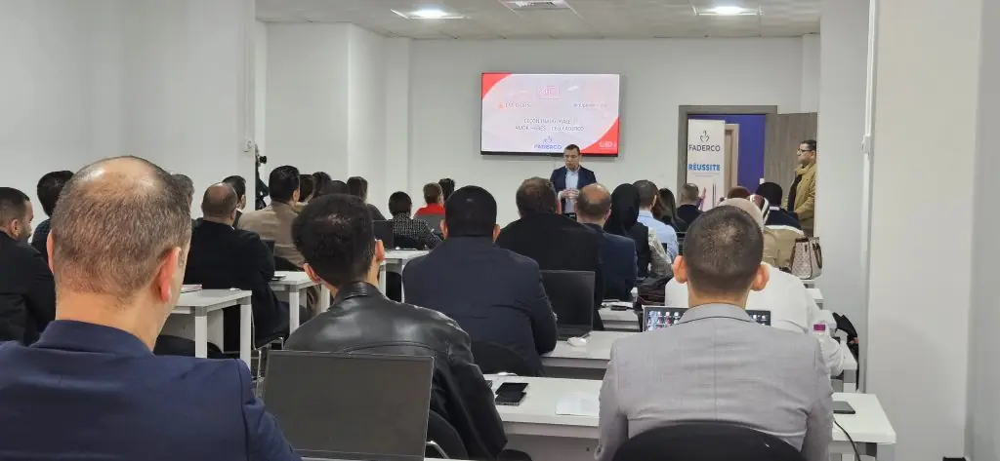

MBA, DBA et formation des cadres, à Alger.
La filiale Executive de MDI forme les cadres en poste. Le MBA International Paris, délivré par Paris-Dauphine | PSL et l’IAE Paris Sorbonne, est dispensé à Alger depuis 2002. Les dix MBA spécialisés durent 12 mois, en présentiel un week-end sur deux.

MDI Executive Education
L’excellence au service du leadership.
« Accélérer la performance, révéler l’excellence » : sous cette signature, MDI Executive Education, rattachée à MDI Algiers Business School, développe des programmes de haut niveau pour les dirigeants et cadres des organisations publiques et privées, en Algérie et au Maghreb.
Mission
Accompagner les leaders d’aujourd’hui et de demain à travers des programmes de formation flexibles et innovants, ancrés dans les réalités des entreprises et alignés sur les standards académiques et professionnels internationaux.
Vision
S’imposer comme la référence en Algérie et en Afrique du Nord en matière de formation continue des dirigeants et cadres, en conjuguant excellence académique, pertinence pratique et rayonnement international.
Une offre ancrée dans l’entreprise
Conçues en partenariat étroit avec le monde de l’entreprise, nos formations couvrent des thématiques clés telles que la gouvernance, la stratégie, le management de l’innovation, la transformation digitale, la finance ou encore la Supply Chain Management. Chaque programme est élaboré pour stimuler la réflexion critique, renforcer la capacité de prise de décision éclairée et accompagner efficacement les processus de transformation organisationnelle.
Nous croyons fermement que l’investissement dans le capital humain est le moteur du développement économique et social.
Dr Brahim Benabdeslem, Président
Nos valeurs
Excellence
Viser les standards académiques et professionnels les plus élevés.
Ouverture internationale
S’appuyer sur des partenariats de prestige avec des institutions reconnues à l’étranger.
Innovation
Promouvoir des approches pédagogiques modernes et évolutives.
Impact
Contribuer à la compétitivité durable des talents et des organisations.
Éthique
Défendre un leadership responsable, inclusif et durable.
Ce qui nous distingue
- Des diplômes délivrés par des universités partenaires — le MBA International Paris est délivré conjointement par l’Université Paris-Dauphine | PSL et l’IAE Paris Sorbonne.
- Un rythme compatible avec un poste — MBA spécialisés : présentiel un week-end sur deux, distanciel un samedi sur deux, pendant 12 mois.
- Des partenaires nommés — CESTE (Saragosse) pour les MBA spécialisés, HEC Montréal pour l’Essentials of MBA, l’Institut Tunisien des Administrateurs pour le Certificat Administrateur d’Entreprises.
- Des programmes conduits pour de grands groupes — Préparation de la relève (Sonatrach et filiales), Haut Potentiel (Sonelgaz et filiales), Performance (groupe Cevital), Administrateur de sociétés (RED-MED).
- Des intervenants de la recherche et du terrain — enseignants-chercheurs et praticiens issus d’institutions nationales et internationales ; le DBA est dirigé par le Pr Pierre Louart et le Dr Brahim Benabdeslem.
Catalogue
Trouvez votre programme.
Filtrez par famille ou cherchez un mot : une fonction, un secteur, un outil. Chaque ligne ouvre la fiche complète : objectifs, public, modules, pédagogie et admission.
20 programmes
- 01 Doctorate in Business Administration (DBA)Une passerelle entre expertise managériale et recherche appliquée.
- 02 MBA International Paris (MBA IP)Le MBA International Paris, un programme de haut niveau en management pour cadres et dirigeants.
- 03 MBA Management des entreprisesMétiers visés : Direction de Business Unit ou de filiale, Direction de la stratégie, Direction des opérations / supply chain.
- 04 MBA Achats & Supply ChainUn MBA pensé pour les professionnels qui veulent transformer la supply chain en atout stratégique.
- 05 MBA Audit – Finance & Contrôle de gestionFormer des experts capables d’assurer le pilotage de la performance financière.
- 06 MBA Business Analytics & IAMétiers visés : Chief Data Officer, Responsable BI, Consultant en IA.
- 07 MBA Cybersécurité & Gouvernance ITUn MBA au carrefour du management et de la sécurité numérique.
- 08 MBA Digital MarketingMétiers visés : Directeur marketing digital, Responsable CRM, Data marketing.
- 09 MBA Management agroalimentaireAccompagner la transformation stratégique de l’industrie agroalimentaire.
- 10 MBA Management hospitalier & santéPiloter la performance et l’innovation dans le secteur de la santé.
- 11 MBA Management des RH et RSEMétiers visés : Directeur RH, Talent Acquisition Manager, HR Business Partner.
- 12 MBA Énergies renouvelablesFormer les leaders de la transition énergétique.
- 13 Banque – Finance – Assurance à confirmerUn parcours d’excellence pour faire monter en compétences les professionnels de la banque, de l’assurance et de la finance.
- 14 Droit et fiscalité des entreprises à confirmerFaire du droit et de la fiscalité une source de création de valeur pour l’entreprise.
- 15 Finance islamique à confirmerUne finance qui se veut universelle, éthique et solidaire.
- 16 Certificat Administrateur d’EntreprisesFormer des administrateurs capables de conjuguer performance économique, gouvernance responsable et intégration des critères ESG.
- 17 Essentials of MBAAccélérer le développement de leaders à tous les niveaux et maximiser leur potentiel.
- 18 Parcours Étudiant-EntrepreneurLe parcours Étudiant-Entrepreneur vous donne toutes les clés pour mener à bien vos ambitions.
- 19 Formation inter-entreprisesDes programmes pratiques pour développer vos compétences.
- 20 Formation intra-entreprisesL’efficacité dans le sur-mesure.
Aucun programme ne correspond à cette recherche. Essayez un autre mot, ou décrivez votre besoin à l’équipe : faire une demande
Familles de programmes
Du doctorat aux cycles certifiants.
36 mois
Doctorat
Le DBA s’adresse à des professionnels expérimentés souhaitant valoriser et approfondir leur parcours managérial par une démarche de recherche rigoureuse et appliquée.
Le DBA en action : une journée d’échanges et de réflexion avec le Pr Pierre Louart
18 mois
MBA International
Créé en 1998 dans le cadre d’un partenariat entre deux pôles universitaires parisiens de renom, l’IAE Paris Sorbonne Business School et l’Université Paris-Dauphine | PSL, le MBA International Paris (MBA IP) s’est imposé comme une référence internationale.
10 programmes
MBA spécialisés
Des parcours de 12 mois, dont 3 mois de projet, en Blended Learning : présentiel un week-end sur deux (vendredi et samedi), enseignement à distance un samedi sur deux.
12 mois, blended learning, avec CESTE
3 programmes · 18 mois
Programmes spécialisés à confirmer
Des parcours de 18 mois, dont 6 mois de projet, en format hybride, entre présentiel et distanciel.
Programmes présentés au catalogue de MDI Executive Education (documents mis en ligne en 2023) : prochaine session à confirmer auprès de l’équipe.
Demander la prochaine session3 programmes
Cycles certifiants
Chaque programme est sanctionné par un certificat.
Programmes phares
36 mois · Doctorat
Doctorate in Business Administration
Trois ans pour mettre au moins dix ans d’expérience managériale au service de la recherche appliquée, jusqu’à la soutenance d’une thèse.
Le programme18 mois · MBA International
MBA International Paris
Le diplôme de Paris-Dauphine | PSL et de l’IAE Paris Sorbonne, préparé à Alger en 18 mois à temps partiel.
Le programme6 mois · Cycles certifiants
Certificat Administrateur d’Entreprises
Cinq modules de trois jours, dont le dernier à Tunis, pour former des administrateurs de société avec l’Institut Tunisien des Administrateurs.
Le programmeInter-entreprises
Des sessions courtes, ouvertes à tous les cadres.
Nos formations inter-entreprises s’adressent aux cadres souhaitant actualiser leurs connaissances et renforcer leur expertise dans un domaine précis.
Thématiques couvertes
- Stratégie
- Management des ressources humaines
- Marketing
- Finance
- Comptabilité et fiscalité
- Vente, négociation et relation clients
- Business intelligence
- Développement personnel
- Management d’équipe
- Achats et supply chain management
Certificat en Management
Le suivi de plusieurs modules au sein d’une même spécialité peut conduire à l’obtention d’un Certificat en Management.
Exemples de sessions
- Piloter la transformation digitale
- Élaborer les tableaux de bord prospectifs
- Manager son projet
- Réussir sa prise de parole en public
- Gérer efficacement son temps
- Manager au quotidien
- Maîtriser la communication digitale
- Maîtriser les techniques de négociation
- Conduire le changement
- Maîtriser la finance pour non-financiers
- Manager efficacement sa logistique : la SCM
- Gérer et fidéliser les talents et le haut potentiel
Thèmes de sessions déjà programmées, donnés à titre d’exemple : le planning en cours est communiqué sur demande.

Séance de formation en salle comble et échanges en petits groupes entre participants.
Intra-entreprises
L’efficacité dans le sur-mesure.
Conçues à partir des enjeux spécifiques de chaque organisation, les formations intra-entreprises permettent d’identifier avec précision les besoins et de proposer des solutions pédagogiques parfaitement adaptées.
Une démarche en trois étapes
- Analyse et compréhension des besoins (phase amont)
- Conception collaborative d’un programme sur mesure
- Mise en œuvre et suivi rigoureux, assurés par un comité de pilotage conjoint
Avec une équipe de conseillers experts en ingénierie pédagogique.
MDI Executive Education accompagne les entreprises dans la conception et la mise en œuvre de programmes de formation sur mesure, construits en partenariat dans une logique de co-construction, afin de garantir une totale adéquation avec leurs attentes et objectifs stratégiques.
Les prestations vont de modules ponctuels à des programmes personnalisés de longue durée, qu’ils soient récurrents ou ad hoc. Les formations peuvent être organisées au sein de l’entreprise ou dans les locaux de MDI.
Les formats
- Format
- Sur mesure, co-construit avec l’entreprise
- Durée
- Du module ponctuel au programme de longue durée
- Lieu
- En entreprise ou dans les locaux de MDI
- Pilotage
- Comité de pilotage conjoint

Accord-cadre · septembre 2025
AYRADE et MDI Executive, pour la transformation numérique.
L’acteur du numérique AYRADE et MDI Executive Education s’associent pour concevoir des programmes de formation adaptés aux enjeux de la digitalisation des entreprises algériennes.
- Concevoir et déployer des programmes de formation adaptés aux besoins de la digitalisation
- Renforcer les compétences des décideurs et dirigeants face aux enjeux du numérique
- Favoriser l’émergence d’un écosystème innovant et compétitif
Partenaires
Des partenaires internationaux.
Le MBA International Paris (MBA IP) est délivré conjointement par l’Université Paris-Dauphine | PSL et l’IAE Paris Sorbonne Business School ; les MBA spécialisés sont dispensés conjointement avec CESTE – Escuela Internacional de Negocios (Saragosse) ; le MBA Business Analytics & IA bénéficie de l’appui d’AYRADE (Cloud, Algérie) ; le Certificat Administrateur d’Entreprises est co-signé par l’Institut Tunisien des Administrateurs ; l’Essentials of MBA est sanctionné par un certificat co-signé par HEC Montréal.

 Université Paris-Dauphine | PSL · MBA International Paris (nouvel onglet)
Université Paris-Dauphine | PSL · MBA International Paris (nouvel onglet) Université Paris 1 Panthéon-Sorbonne, IAE Paris Sorbonne Business School · MBA International Paris (nouvel onglet)
Université Paris 1 Panthéon-Sorbonne, IAE Paris Sorbonne Business School · MBA International Paris (nouvel onglet) CESTE – Escuela Internacional de Negocios, Saragosse · MBA spécialisés (nouvel onglet)
CESTE – Escuela Internacional de Negocios, Saragosse · MBA spécialisés (nouvel onglet) HEC Montréal · Essentials of MBA (nouvel onglet)
HEC Montréal · Essentials of MBA (nouvel onglet)
Et aussi
- Institut Tunisien des Administrateurs
- AYRADE
Votre demande
Recevoir la brochure, candidater.
Brochure, candidature, rappel par un conseiller ou devis pour votre entreprise : une seule demande suffit, l’équipe de MDI Executive Education vous répond.
Et ensuite ?
- L’équipe Executive Education vous recontacte pour vous transmettre la brochure, le calendrier et les conditions.
- Frais de participation : sur demande, selon le programme et le format.
- Pour une entreprise : un échange pour préciser le public, les objectifs et le calendrier.
MDI Executive Education
Boulevard El Moudjahid Assad FodileRoute de Ouled Fayet, Chéraga
Alger, Algérie
0560 93 94 17 · 0560 93 94 14
executive.edu@mdi-alger.com (nouvel onglet)
Votre projet
Construisons votre parcours.
Un diplôme pour vous, une session pour vos équipes ou un programme construit pour votre organisation : un conseiller de MDI Executive Education vous oriente vers le format adapté.